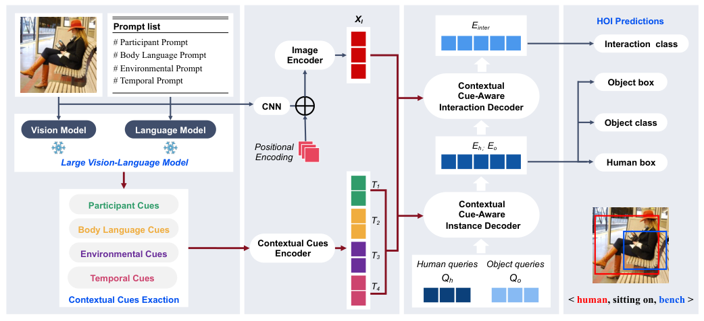
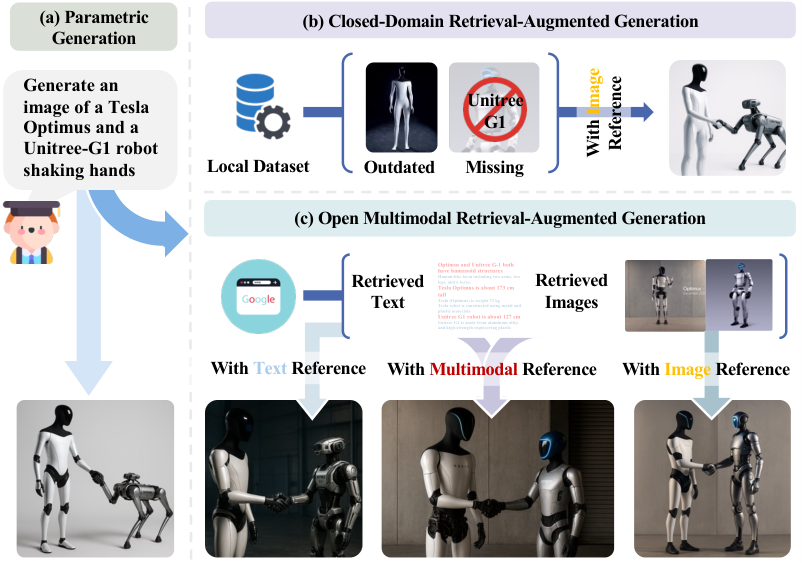

Research
Our research is organized around three connected directions: perception and understanding, semantic reasoning, and autonomous decision-making.
From perception to autonomous decisions
Perception & Understanding
Learning representations from images, text and behavior to understand objects, interactions and user preferences.
Semantic Reasoning
Interpreting semantic aspects and combining internal knowledge with retrieved evidence for grounded answers.
Autonomous Decision-Making
Planning, tool use and action policies for agents and robots operating over multiple steps.
These directions inform one another: representations support reasoning, reasoning guides decisions, and actions provide new observations. Individual projects may address one direction or connect several.
Selected milestones
- 2022
- 2023
- 2025
- 2026
Perception & Understanding
How can models learn useful representations of the world and of human intent?
We study how information from different modalities can be represented, combined and interpreted. Our work includes human–object interaction understanding, short-text clustering and robust user–item representations, with recommendation as an application. Related work on visual synthesis and privacy-preserving data supports these studies.
Multimodal representation · Visual understanding · Text and preference modeling
Related projects

Selected publications
Semantic Reasoning
How can models interpret evidence and resolve conflicting knowledge?
We study reasoning that draws on both model knowledge and external evidence. CoRe-MMRAG reconciles knowledge from different sources for multimodal question answering; SAGCN uses language models to infer semantic aspects in user reviews and inform recommendation.
Knowledge reconciliation · Multimodal RAG · Semantic aspect inference
Related projects

Selected publications
Autonomous Decision-Making
How can agents choose and execute actions while making progress toward a goal?
Our work studies how agents gather evidence, manage context and act over extended tasks. MM-ContextFold supports multimodal agentic retrieval, FIG uses iterative retrieval to ground image generation, and our MetaFine entry refines robot policies through evaluation-guided demonstrations. Memory and multi-agent collaboration are ongoing topics.
Agentic retrieval · Context and memory · Robot policies
Related projects
